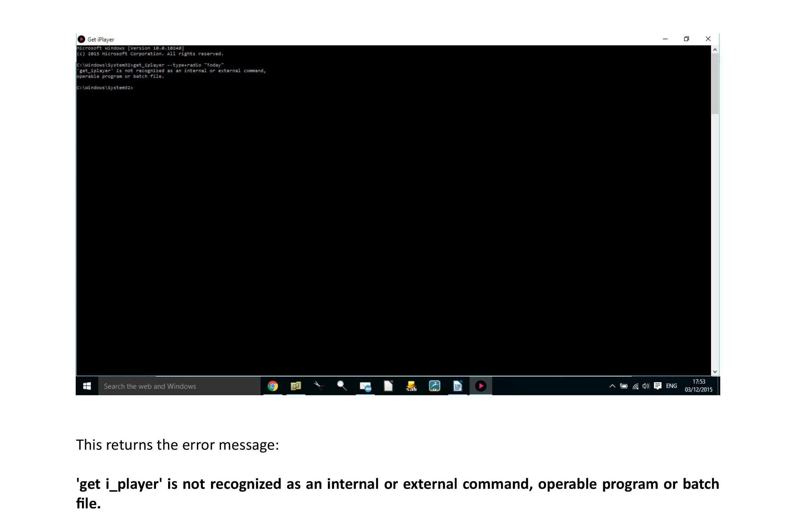

A stupid question from a stupid (in IT terms) person.......
I've had to reinstall GIP after a system meltdown. I have gone into my backed-up desktop short-cut which leads to:
c:\windows\system32\cmd,
but when inputting
get_iplayer type=radio
(pasted direct from the user guide to avoid syntax errors), I get the response that the command is not recognised. I'm clearly making a basic error, but can somebody tell me what command I should input where please? The otherwise very comprehensive instructions are silent on this fundamental point.
[color=#f9f9f9][size=medium][font=Courier, monospace]get_getiplayer --type=radio[/font][/size][/color]
A look at the properties on my get_iplayer desktop shortcut shows this in the target:
C:\Windows\System32\cmd.exe /k get_iplayer.cmd --search dontshowanymatches && get_iplayer.cmd --help
with the 'start in:' field pointing at my get_iplayer directory in "c:\program files (x86)\get_iplayer" (I'm on a 64 bit system, otherwise it would just be program files). So maybe your 'start in:' in properties no longer points to the directory where get_iplayer is, so the console doesn't know where to look when you type in your command.
Hope that's of some help to you.
(03-12-2015, 03:15 AM)but when inputting
get_iplayer type=radio
(pasted direct from the user guide to avoid syntax errors), I get the response that the command is not recognised.
That is not pasted direct from the user guide - look again - and would never work. It isn't entirely clear whether you have created an incorrect shortcut (see post from @dsaltmer) or whether you are just entering an incorrect command option. Post complete verbatim error messages so we see what is going on.
Okay, point taken that I omitted the two dashes when I typed this in, however this was what I input to the console. However, after uninstalling and reinstalling, I am still no further forward. I attach screen shots and error messagees - I am unable to upload as a Word file or pdf?

I'm curious as to why you aren't opening get_iplayer from the Start menu? You're the second Windows user I've seen opening form other shortcuts or trying to launch from the on disk program folder. Do you access other programmes like this? Do you ever access programmes from the start menu?
If you open the start menu and type 'get_iplayer' (without the quotes), do get_iplayer's start menu entries appear? If you open get_iplayer using those start menu links do the commands work?
If they do, simply right click on the start menu icon and you can select 'pin to taskbar' (if memory serves me correctly) and then you have a working shortcut. You can then delete the old one.
Presumably Windows start menu also has a 'list all programmes' function, in which case get_iplayer would be in there without even typing anything to search for it.
Okay, thanks. Before uninstalling then reinstalling, this option was not there, thus I assumed I was doing something wrong. It is now there and I'm back on track.
Sorry for necroposting here, but the following issue seems relevant to the topic raised by the OP here.
When installing get_iplayer via the installer provided and under a «standard user account» you run into the following problem:
Even while using the «run as administrator» option from the context menu to escalate permissions, the standard start menu entries do not get created for the current user. I had to upgrade my account temporarily to a full admin account, then install get_iplayer and then return my account to standard user.
Come to think of it, I had not checked, if the installer creates a startmenu entry in the other administrator account, therefore allowing the startmenu links to be copied over. However, IMHO shortcuts should be created for all users per default or at least on an optional basis during the install.
Thanks!
(06-01-2016, 12:13 AM)Even while using the «run as administrator» option from the context menu to escalate permissions, the standard start menu entries do not get created for the current user. I had to upgrade my account temporarily to a full admin account, then install get_iplayer and then return my account to standard user.
That is what the instructions tell you to do, for the reason you've discovered
(06-01-2016, 12:13 AM)Come to think of it, I had not checked, if the installer creates a startmenu entry in the other administrator account, therefore allowing the startmenu links to be copied over.
That is the case when using a separate adminstrator account.
(06-01-2016, 12:13 AM)However, IMHO shortcuts should be created for all users per default or at least on an optional basis during the install.
This has already been fixed for next release. Future installers will perform an explicit "All Users" installation.
Well, regard my post then as a request for improvement of the installer, please!
{kind=link}